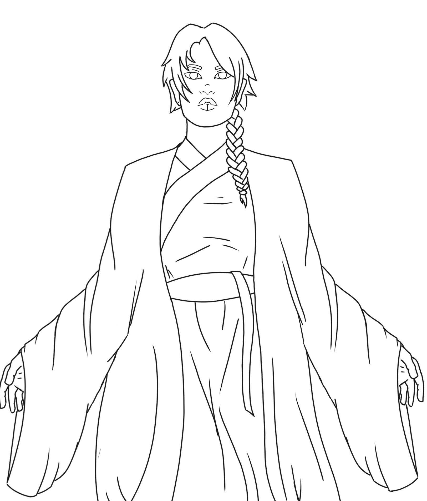
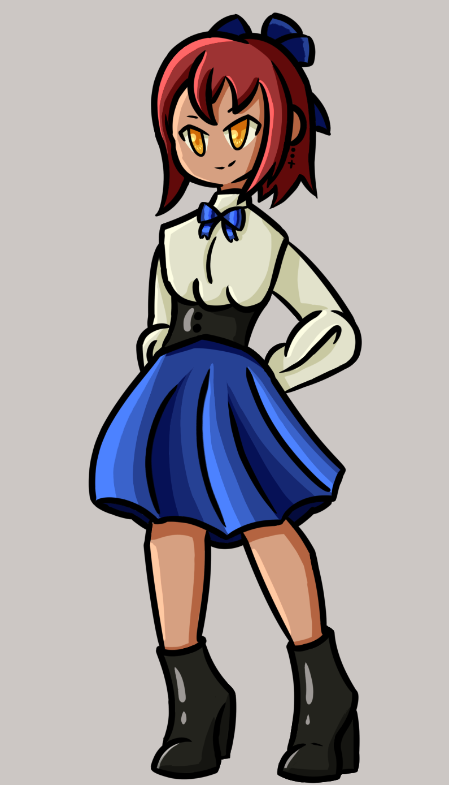

Why I love draw?
Drawing has been a lifelong passion of mine, starting from my childhood. It's a fascination that has stuck with me over the years. Drawing is a simple yet deeply engaging activity that has always provided me with endless entertainment. I'm constantly drawn to it because it's not only captivating but also offers a fascinating challenge. Exploring and practice new techniques in drawing is like an adventure. It's a journey that allows me to express myself through art.

Types of Drawing

- Digital Drawing: Creating art using computer software and graphic tablets.
It offers versatility and a wide range of tools for artists. - Canvas Drawing: Drawing on a traditional canvas with various art mediums like paint, charcoal, or pencils. It's a classic and widely used form of art.
- Pen and Ink Drawing: Employing pens, usually with ink, to create precise and intricate line drawings. It's known for its fine details and precision.
- Sketching: Making quick, rough drawings to capture the essence of a subject or idea. Sketches are often used as a foundation for more detailed artwork.
- Pastel Drawing: Using soft pastel sticks to create colorful and expressive drawings. Pastels offer a unique and vibrant medium.